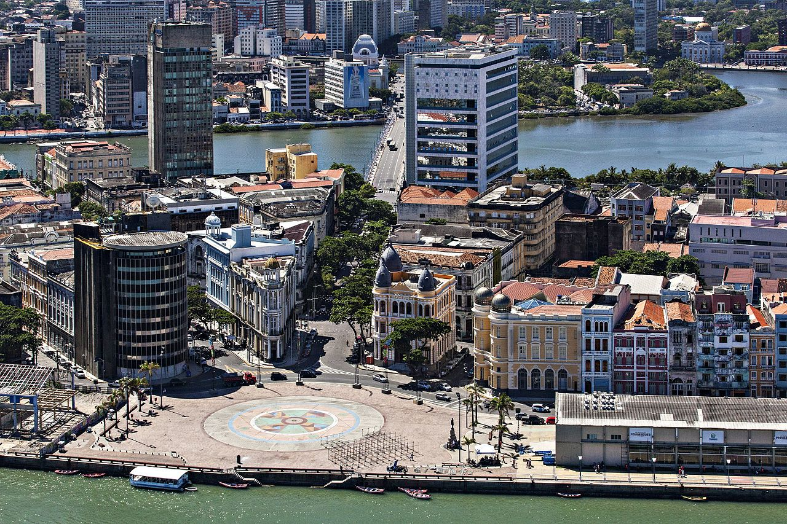
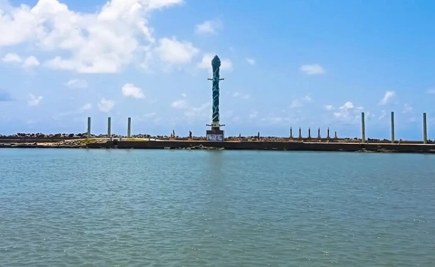

Praça do Marco Zero: É o cartão postal da cidade, um ponto de referência histórico e geográfico, marcando o início da contagem das coordenadas geográficas do Brasil.

Parque das Esculturas Francisco Brennand: Espaço ao ar livre que abriga esculturas do renomado artista pernambucano Francisco Brennand.

Centro de Artesanato de Pernambuco: É um local que exibe e vende artesanato local, apresentando uma rica variedade de produtos tradicionais e contemporâneos do estado.
Armazéns do Porto: Edifícios históricos revitalizados que abrigam lojas, restaurantes e espaços culturais, proporcionando uma atmosfera encantadora à beira do Rio Capibaribe.
Caixa Cultural: Charmoso edifício de 1912 que funcionou como sede da Bolsa de Valores de Pernambuco até 2006. O espaço multicultural traz exposições, apresentações de teatro, música, dança e diversas outras atividades.
Cais do Sertão: Um museu interativo que homenageia a cultura do sertão nordestino.
Paço do Frevo: Museu que celebra o Frevo, um estilo de música e dança local.